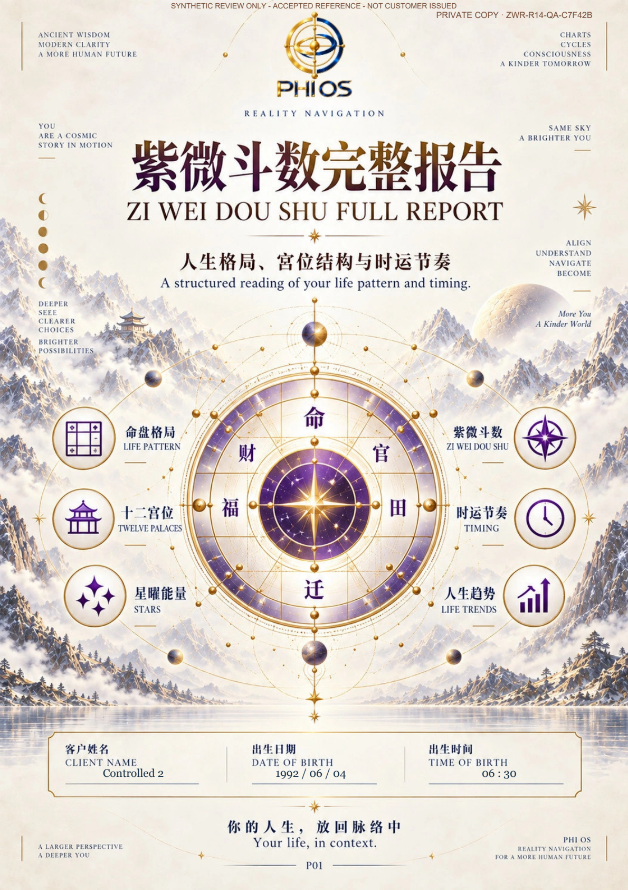
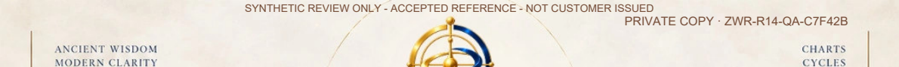
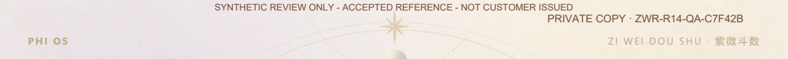
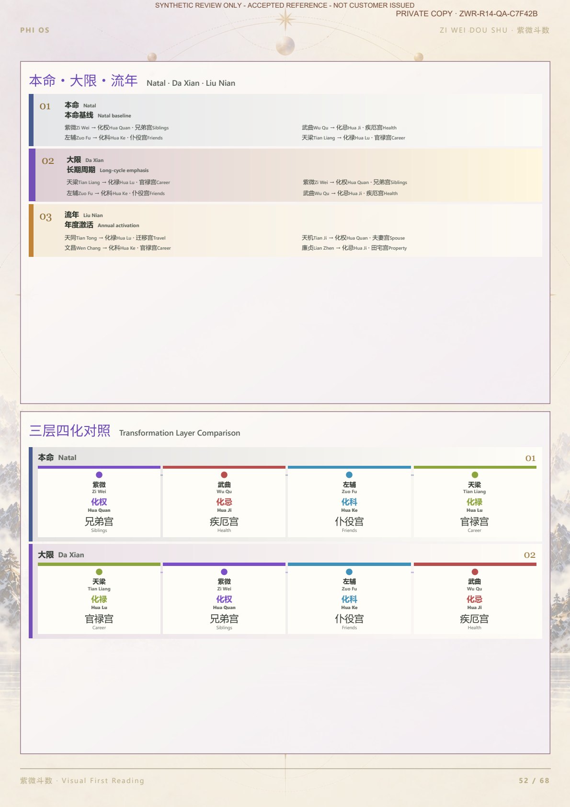

LOCAL FINAL-FILE GAP CLOSED · OWNER / WATERMARK / CLOUD / LIVE GATES REMAIN SEPARATE · 2026-11-02
P47／P52／P58 记录为 LOCAL_VISUAL_ACCEPT_CANDIDATE，Owner 尚未正式签署。已批准中英文正文、15 张原生图数据与 R2 原图保持冻结。正式客户发行仍 BLOCKED。
交接结论 · 七项关卡 · 独立最终出版回执 · 具名阻塞 / 最小决定
| Exact file | Version / bytes / SHA256 | Native Account local proof |
|---|---|---|
| 保留的最终 Q87 原字节 | ZWR-R14-REFERENCE-Q87-19,807,509 bytes 2dd6e0b3a4c6fba2a5ab7305afdb1cd2a1d4e9c72b56c63f8ca3677275d578b4 | 逐字节下载／重下载／独立冷重开一致；renderer 0。 Subject／Snapshot／Order／Entitlement／Publication 绑定。 |
| 个性化水印 V2 样张 | ZWR-R14-PERSONALIZED-WM-QA-29,838,466 bytes 7babe9af729f3f82704dfaaa7265f8019066d8c271fc3f27023ded0bd1950d72 | 逐字节下载／重下载／独立冷重开一致；renderer 0。 Subject／Snapshot／Order／Entitlement／Publication 绑定。 |
已准确区分：既有 Worker 来源回执为 72 页；冻结最终出版文件为 68 页。原生快照与批准正文来源相同，分页版次不同。最终文件使用自己的分页图、版本、SHA 与回执；不重排、不复用旧 9,441,759 bytes 文件，也不宣称浏览器源回执就是最终文件回执。
Profile / 个性化 / 分页来源合同 · ACCEPT 来源与原生快照 · 实际最终分页图 · 27 项权限与不可变负例 · 独立进程精确重开 · 真实原生 Account 列表 / PDF 链接

PRIVATE COPY + opaque reportRef；顶部右对齐、8pt、顶端基线 6mm、右侧 12mm。保留 SYNTHETIC 标识，不加入完整电邮／身份证。V1 居中水印碰到封面装饰，原文件与 QA 保留，V2 另立版本与 SHA。正式水印仍须 Owner 独立批准。



V2 全部 68 页文字 / 像素 / 图像检查 · 12 个书签的实际目标一致 · 水印政策候选 R2 · 代码归属与保护证据
| Gate | Status | Evidence / boundary |
|---|---|---|
| Reference Q87 Publication | PASS_LOCAL_EXACT_BYTES / LOCAL_VISUAL_ACCEPT_CANDIDATE | 68 pages / 12 bookmarks / 9807509 bytes / 2dd6e0b3a4c6fba2a5ab7305afdb1cd2a1d4e9c72b56c63f8ca3677275d578b4. Owner signature pending. |
| Personalized PDF Publication | PASS_LOCAL_SAME_SYNTHETIC_SUBJECT_V2 | Existing Profile/cover fields, same approved source chart and body. 9838466 bytes / 7babe9af729f3f82704dfaaa7265f8019066d8c271fc3f27023ded0bd1950d72. Not an arbitrary customer's manuscript. |
| Watermark Human Approval | PENDING_OWNER | PHIOS-REPORT-COMMERCIAL-WM-R14-CANDIDATE-R2; top-right / 8pt / 6mm baseline / 12mm inset. V1 retained, superseded by V2. |
| Private Artifact Handoff | PASS_LOCAL_TWO_DISTINCT_IMMUTABLE_VERSIONS | Actual pinned Q87 and V2 bytes persisted through existing Artifact Store. Version/receipt/byte drift and concurrent drift denied. No formal production store write. |
| Native Account Delivery | PASS_LOCAL_NATIVE_LIST_DOWNLOAD_COLD_REOPEN | Native list includes PDF links; both files downloaded/redownloaded byte-for-byte; separate cold process; 27 negative cases; zero renders. Seeded local rights/principal only; browser UI interaction NOT_RUN. |
| Non-production Cloud QA | NOT_RUN | No actual Cloud private Worker/D1/R2/authenticated session campaign or Cloud write. |
| Deployment / Live Customer / P8 Admission | CLOSED / NOT_RUN / FALSE | No commit, push, merge, deployment, real payment, Live customer issuance or P8 admission. |
下一次最小 Owner 决定：签署参考文件的局部视觉状态，并独立审阅水印 V2 与封面字段；之后才另行授权非生产 Cloud QA。当前不把本地技术 PASS 当成商业出版、实际客户或 P8 通过。
沿用现有 Publication／Account／CustomerArtifactStore／PRIVATE_REPORTS Owner。无第二个 PDF API、存储表、出版引擎或压缩器。仅定向零费用 QA；无 full npm check、收费、commit／push／merge／deploy 或生产写入；BaZi 与其他方法未改。